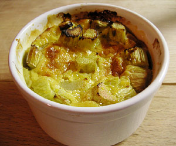

Rhabarber-Apfel Auflauf
5,5 von 6150 gr Rhabarber rüsten und in 2 cm lange Stücke schneiden.Einen Apfel schälen, entkernen und in dünne Ringe schneiden. Ca. 150 gr Zopf in sehr dünne Scheiben schneiden. 2 Eier 1 dl Halbrahm und 1 dl Milch gut verrühren. Etwas Orangenschale fein abreiben und mit Zimt, etwas Vanillezucker und 50gr braunem Zucker unter die Eimasse ziehen. Kleine Gratinförmen schichtweise mit Rhabarber, Apfel und Brotscheiben schichten. Die Eimasse darüber geben und bei 200 C ca 30min Backen.
